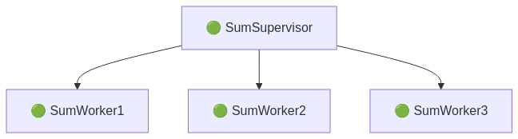
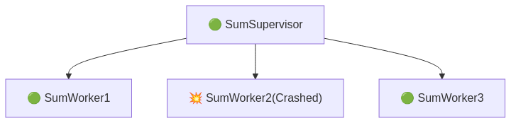
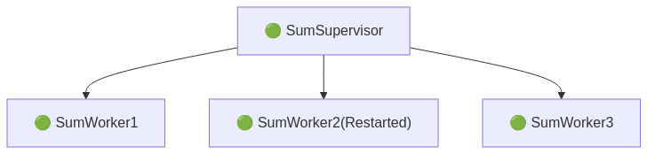

Scalable, Fault-Tolerant, Functional
Designed by

José Valim
Why was Elixir Created?
- José Valim made Elixir because:
- Ruby (MRI) threads are not real threads
- Ruby on Rails thread safety is hard to keep
- He heard about what we can do with Erlang
- Development:
- Started in 2010
- Version 1.0 released in 2014
Comparison ?

Definition
Fault: A defect or error in the software. (Cause)
Failure: The observable incorrect behavior caused by the fault. (Side Effect)
Example 1: Bug in Code
Fault: Incorrect discount calculation (e.g., division by zero).
Failure: The application crashes when a user applies a discount.
Example 2: Memory Leak
Fault: Memory is not released properly.
Failure: The application slows down and eventually crashes.
Elixir process world

Demo: Process

OOP? Will Crash on Error
Handle exception with (try-catch) block
class SumCalculator
def calc_sum(n)
raise "error" if n == 13
(1..n).sum
end
end
calc = SumCalculator.new
begin
puts calc.calc_sum(10) # Output: 55
puts calc.calc_sum(13) # Error, but program continues
rescue => e
puts "Caught error: #{e}" # Handles error manually
end
we don’t handle errors with try-catch

Fail fast, let it crash
a software development principle advocating for immediate error reporting and system termination (or "crash") rather than attempting to continue execution in an invalid state

Normal
Crash
Restart
"Worker"
defmodule SumWorker do
use GenServer
def start_link(name) do
GenServer.start_link(__MODULE__, %{}, name: name)
end
def calc_sum(worker_name, n), do: GenServer.call(worker_name, {:sum, n})
def init(state) do
{:ok, state}
end
def handle_call({:sum, 13}, _from, _state) do
raise "Worker crashed because n == 13"
end
def handle_call({:sum, n}, _from, state) do
sum = div(n * (n + 1), 2)
{:reply, {:ok, sum}, state}
end
end
"Supervisor"
defmodule SumSupervisor do
use Supervisor
def start_link(_) do
Supervisor.start_link(__MODULE__, :ok, name: __MODULE__)
end
def init(:ok) do
children = [
Supervisor.child_spec({SumWorker, :worker1}, id: :worker1),
Supervisor.child_spec({SumWorker, :worker2}, id: :worker2),
Supervisor.child_spec({SumWorker, :worker3}, id: :worker3),
]
Supervisor.init(children, strategy: :one_for_one)
end
end
"Test"
{:ok, sup_pid} = SumSupervisor.start_link(:ok)
Supervisor.which_children(sup_pid)
SumWorker.calc_sum(:worker1, 5)
SumWorker.calc_sum(:worker2, 5)
SumWorker.calc_sum(:worker3, 5)
Demo: Let it crash + Realtime app

Real world application
- Discord
- WhatsApp(Meta)
- Heroku
- PepsiCo
- Plausible Analysis
Summary
- Let It Crash – No try-catch, processes crash on failure
- Auto-Restart – If a worker crashes, the supervisor restarts it
- Isolation – A crashing process doesn't affect others
- Runs on BEAM, great for scalability